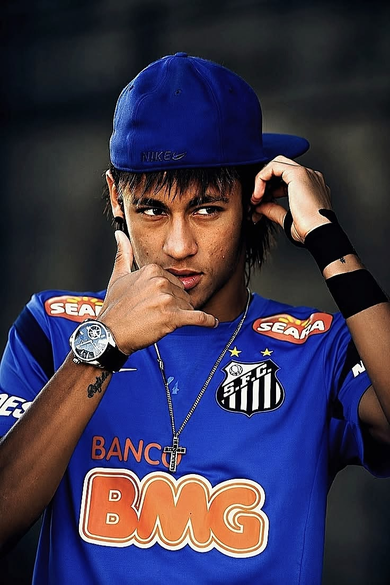

Gallery
.jpeg)

“Born to create. Destined to inspire.”
From the streets of Brazil to the world's biggest football stages, Neymar Jr. built a career defined by creativity, flair, and an unmistakable love for the game. Born with a natural talent for football, Neymar quickly stood out for his extraordinary dribbling, fearless skills, and ability to turn ordinary moments into unforgettable ones. From his early days at Santos to his rise on the international stage, every step of his journey was marked by ambition and imagination. His time at Barcelona brought a new level of global recognition, where his chemistry with Lionel Messi and Luis Suárez formed one of football's most celebrated attacking partnerships. Later, his move to Paris Saint-Germain made him one of the most prominent stars in world football, while his journey continued with new challenges and chapters. Beyond the goals and trophies, Neymar became known for the way he played — with freedom, confidence, and creativity. Every touch, flick, dribble, and finish carried his unique signature. For Brazil, he carried the hopes of a football-loving nation, becoming one of the country's most influential modern stars. His journey has never been only about statistics; it has been about moments, emotions, and the magic he brings to the pitch. Neymar's story is a reminder that football is not just about winning — it's about inspiring, creating, and making people remember the moment.
